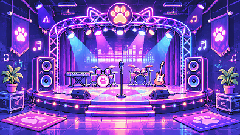

PIXEL PETS / BIG LITTLE SOUNDS 像素宠物 · 奇妙小声音
Good company.
Great little symphonies.
A seaside sunset, your favourite little friends, and a song only you can make.夕阳海滨、可爱的伙伴，还有一首由你创作的小小合奏。
☼
SUNSET SESSIONS
VOL. 001 — SEASIDE PARK

✦ NEON NIGHT · 霓虹夜晚Stay a while. Make a little noise.
和伙伴们多待一会儿，听听他们的声音。
和伙伴们多待一会儿，听听他们的声音。
● Ready when you are · 准备好就开始CLICK A PET TO EDIT ITS SOUND · 点击宠物编辑声音
Your little band Pets · 宠物管理 03 / 06
A little inspiration Templates · 自动编曲
START WITH A MOOD · 选一种心情Auto Arrange loads a ready-made rhythm. Tweak every beat after.自动安排节奏后，仍可逐拍手动修改。
Made of pixels, paws & possibility.像素、爪印与无限可能。